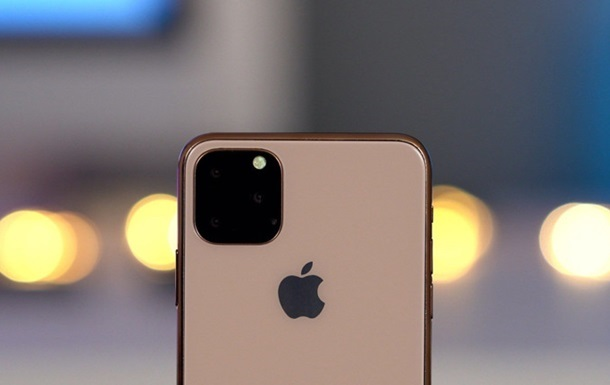
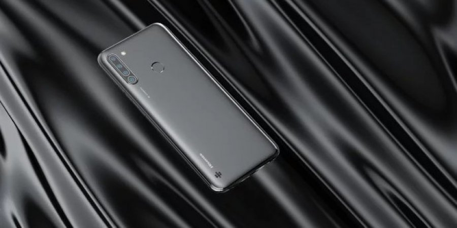

Apple звинуватили в стеженні за власниками iPhone 11

Компанія Apple постійно стежить за всіма власниками останньої версії iPhone. Про це на своїй сторінці заявив експерт з кібербезпеки Браян Кребс.За словами фахівця, Apple збирає дані про місцезнаходження користувачів, навіть коли гаджет в режимі польоту. При цьому компанія збирає дані без відома користувачів.На підтвердження своїх слів Кребс зняв на відео, на якому він відключає можливість запитувати дані у супутників на смартфоні. Коли чоловік переключає iPhone в авіарежим, то з'являється значок активної системи GPS. Подібні скарги надходили і від інших користувачів.
Експерт вважає, що, обходячи заборону користувача на використання GPS, компанія порушує його приватність.У відповідь на звинувачення, представники Apple заявили, що не бачать в цьому нічого страшного.
У Китаї анонсували смартфон, який може виявити приховані камери

Китайський виробник електроніки Hisense анонсував смартфон Hisense F40, який оснащений функцією виявлення будь інфрачервоної камери, навіть якщо вона прихована.
Крім фотографій пристрою і розповіді про незвичайних модулях камери, ніяких інших подробиць не повідомлялося.
Hisense F40 був сертифікований китайським центром TENAA. Смартфон оснащений 6,617-дюймовим дисплеєм з роздільною здатністю 720 пікселів. Телефон має розміри 166,3 76,5 9,19 мм і важить всього 170 г.
Hisense F40 оснащений батареєю ємністю 5000 мАг (4850 мАг відповідно до TENAA). Пристрій працює на безіменному процесорі з тактовою частотою 2,0 ГГц. На сайті повідомляється про 8 ГБ оперативної пам'яті і 256 ГБ вбудованої пам'яті, але, швидше за все, будуть інші варіанти пам'яті.
У моделі виділяється здатність камери виявляти будь-які інфрачервоні камери поруч. Камера смартфона складається з комбінації 13MP + 8MP + 2MP + 2MP, всі вони розташовані у верхньому лівому кутку вертикально. У той час як три датчика знаходяться в одному модулі, четвертий датчик розташований під інфрачервоним детектором.
Модель Hisense F40 буде випускатися в кольорах Polar Night Black і Star Blue. Hisense поки офіційно не оголошує ціни і дату початку продажів.
Додамо. на тому ж заході компанія Hisense презентувала новий смартфон King Kong 6, головною особливістю якого став акумулятор зі значною ємністю - 10 010 мАг. Запевняють, що його вистачить на 5 днів роботи.
Раніше НВ повідомляло, що китайська компанія Hisense представила смартфон Hisense A5, який оснащений екраном E-Ink - на основі електронного паперу. Виробник обіцяє, що Hisense A5 з таким екраном здатний витримати рекордні 10 днів автономної роботи.
Hisense A5 оснащений 5,84-дюймовим екраном з роздільною здатністю 1440 * 720. У чорно-білих екранів з технологією E-Ink немає синього світлового випромінювання. Для нічного використання використовується «м'яка» регульована підсвічування з 2048 рівнями. На відміну від сучасних смартфонів, використання такого екрану поза приміщеннями не викликає стресу для очей.